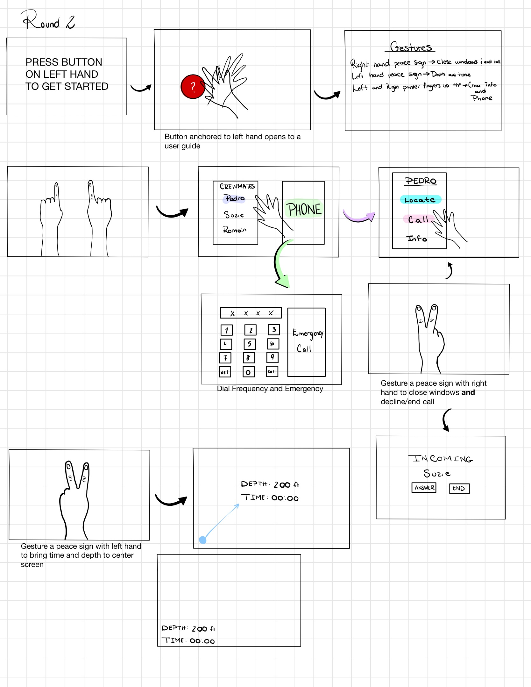
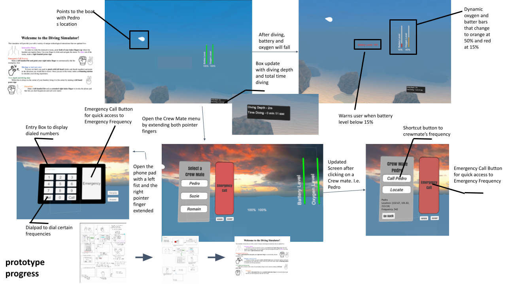
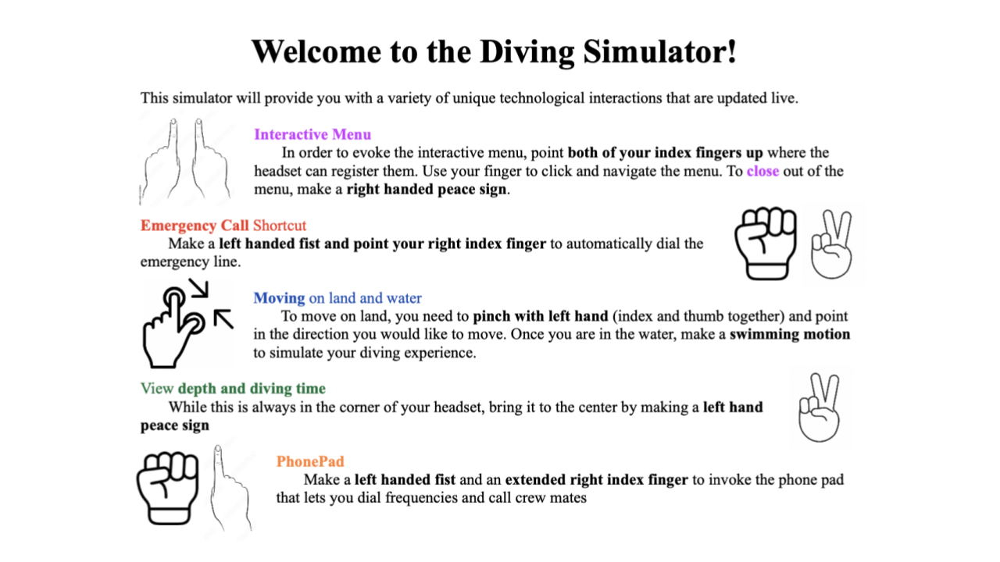
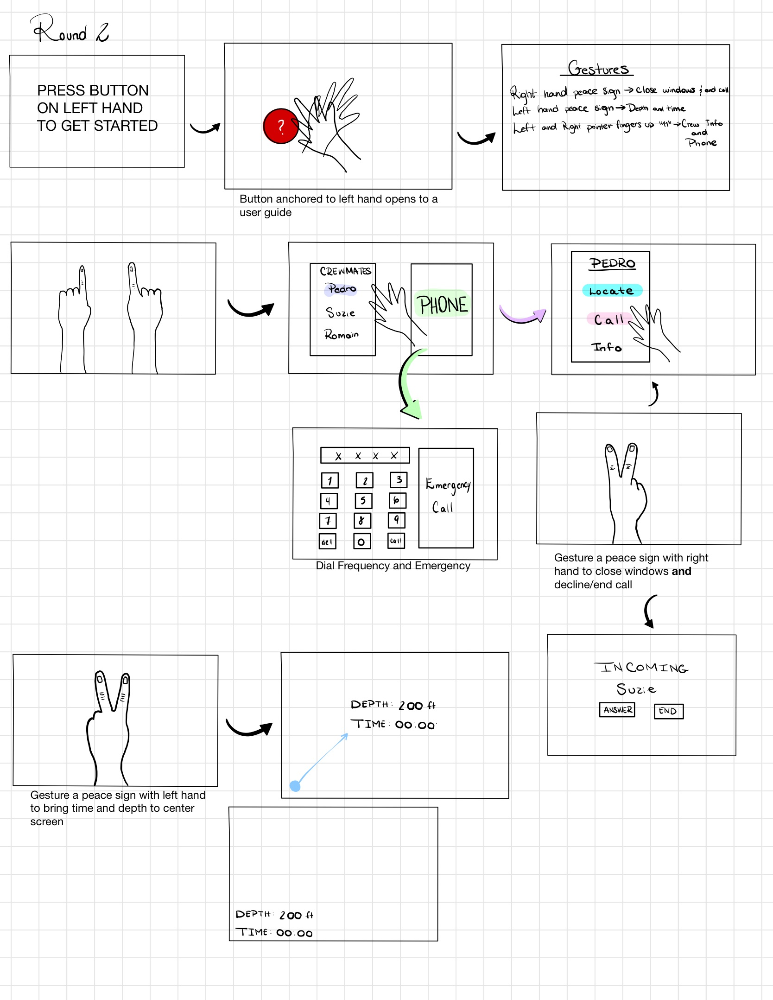
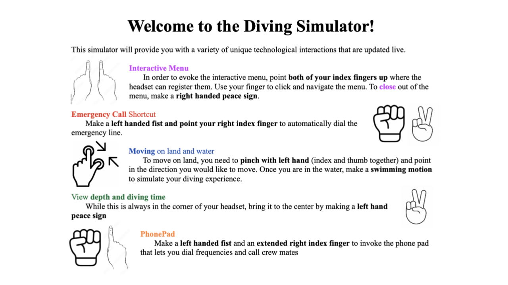

Protoptypes

inital protoptype
final protoptype
Visuals
diving simulator features
diving simulator open menu
Diving Simulator Interface
The Diving Simulator Interface was a project in which we designed and implemented several key features, including an interactive menu, an emergency call shortcut, displays for depth, oxygen levels, and dive time, as well as a functional phone pad.
link to published video:https://youtu.be/dHGg0nGgcuQ?si=evchU7sVWbayVD9T
inital protoptype
final protoptype
diving simulator features
diving simulator open menu